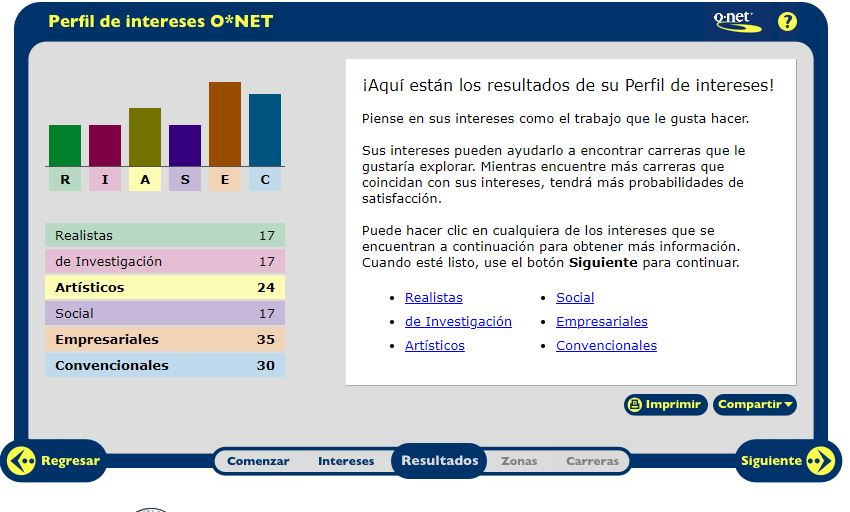
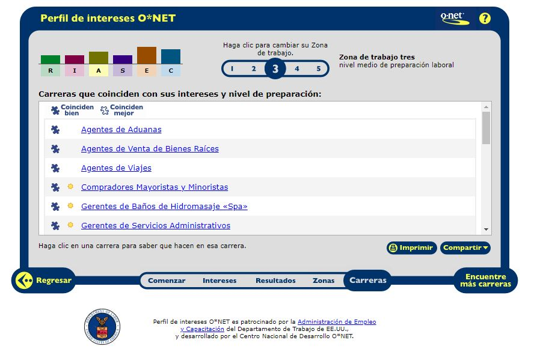
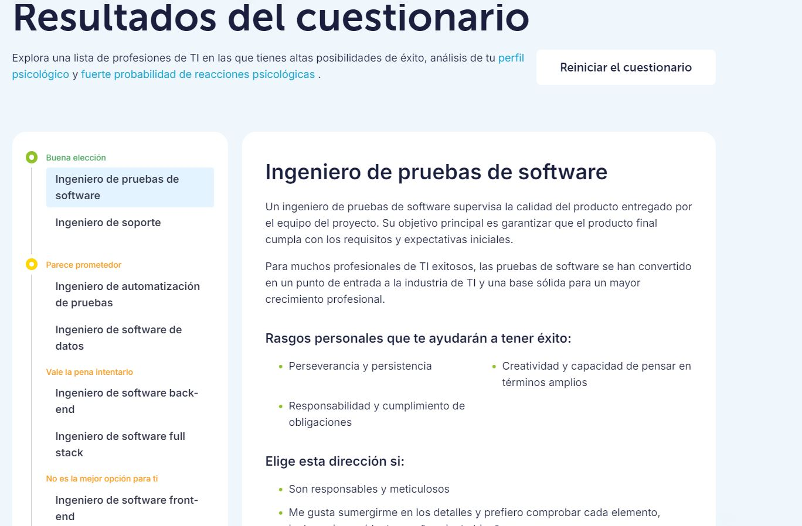

INTELIGENCIA ARTIFICIAL CLASE 1
Temas sugeridos
Aprendimos a subir archivos a Github...

Vimos que datos se repetían y buscamos graficar de cierto que nos brindara dicha información en una gráfica de pastel.
Temas sugeridos

Se agruparon las actividades que eran similares y se contaron manualmente.
Columnas

Elegimos la columna número 5 y sacamos las palabras repetidas con la ayuda de ChatGPT, las rectificamos manualmente e hicimos lo mismo con las palabras únicas (que no se repetían). Luego, hicimos la suma de las palabras repetidas y también sacamos el número de palabras únicas, y por último hicimos un gráfico circular 3D con los números de las palabras repetidas.
Columnas

De manera manual tomé los nombres de las distintas IAs y luego conté cuántas veces se repetía cada una. Finalmente, junté los valores y generé un anillo con Excel donde podemos ver que lo que más se repite es ChatGPT.
Nombre de aplicaciones de IA

Yo utilicé Excel con fórmulas para sacar las palabras que estaban repetidas, separando el texto y luego contando las palabras más importantes de las inteligencias artificiales utilizando esta fórmula para contar las palabras que se repiten:
SUMA(SI(NO(ESERROR(BUSCAR("chat"; A25:AY41)));1;0))+SUMA(SI(NO(ESERROR(BUSCAR("chat gpt"; A25:AY41)));1;0))
Tablas Dinámicas

Se realizó utilizando fórmula de Excel y tablas dinámicas.
Habilidades blandas

David Sarria - Valentina Montealegre: Nos dimos cuenta que hay varias coincidencias y todas apuntan hacia el hecho de que todos contamos con habilidades blandas suficientes y exactas para llevar a cabo un excelente trabajo en equipo.
Habilidades blandas
Básicamente lo que hicimos fue identificar, contar las palabras y finalmente estructuramos los resultados en una tabla de conteo que permite ver rápidamente la frecuencia de cada palabra y proporciona una visión general de los temas más mencionados, los cuales son la inseguridad, contaminación y transporte.
Clase 2
IA, definición, las fronteras
Clase 3
Redes Neuronales
Toda red neuronal consta de capas de nodos o neuronas artificiales: una capa de entrada, una o varias capas ocultas y una capa de salida. Cada nodo se conecta a los demás y tiene su propia ponderación y umbral asociados.
Las redes neuronales se basan en datos de entrenamiento para aprender y mejorar su precisión con el tiempo.

Comparación de Algoritmos: DFS vs BFS
Comparación de Resultados: DFS vs BFS
| Labyrinth |
Algoritmo |
Estados Explorados |
¿Encontró Solución? |
Camino |
| Lab 1 |
DFS |
500 |
Sí |
Camino DFS 1 |
| Lab 1 |
BFS |
300 |
Sí |
Camino BFS 1 |
| Lab 2 |
DFS |
800 |
No |
N/A |
| Lab 2 |
BFS |
450 |
Sí |
Camino BFS 2 |
Clase 4
Redes neuronales y Tensorflow
Aprendimos para que se usa tensorflow en google colab y

CUESTIONARIO
PRIMEROS Resultados
Aprendimos para que se usa tensorflow en google colab y



CUESTIONARIO
PRIMEROS Resultados
parcial 2
logic.py
import itertools
# Clase base para representar oraciones lógicas
class Sentence():
def evaluate(self, model):
"""Evalúa la oración lógica con un modelo dado."""
raise Exception("nothing to evaluate")
def formula(self):
"""Devuelve la fórmula en forma de cadena que representa la oración lógica."""
return ""
def symbols(self):
"""Devuelve un conjunto de todos los símbolos en la oración lógica."""
return set()
@classmethod
def validate(cls, sentence):
"""Valida que el objeto sea una instancia de Sentence."""
if not isinstance(sentence, Sentence):
raise TypeError("must be a logical sentence")
@classmethod
def parenthesize(cls, s):
"""Agrega paréntesis a una expresión si no están ya presentes."""
def balanced(s):
"""Verifica si una cadena tiene paréntesis balanceados."""
count = 0
for c in s:
if c == "(":
count += 1
elif c == ")":
if count <= 0:
return False
count -= 1
return count == 0
if not len(s) or s.isalpha() or (
s[0] == "(" and s[-1] == ")" and balanced(s[1:-1])
):
return s
else:
return f"({s})"
# Clase para representar un símbolo
class Symbol(Sentence):
def __init__(self, name):
self.name = name # Nombre del símbolo
def __eq__(self, other):
"""Compara si dos símbolos son iguales."""
return isinstance(other, Symbol) and self.name == other.name
def __hash__(self):
"""Genera un hash para el símbolo."""
return hash(("symbol", self.name))
def __repr__(self):
"""Representación en cadena del símbolo."""
return self.name
def evaluate(self, model):
"""Evalúa el símbolo en el modelo dado."""
try:
return bool(model[self.name]) # Devuelve el valor del modelo
except KeyError:
raise EvaluationException(f"variable {self.name} not in model")
def formula(self):
"""Devuelve la fórmula del símbolo."""
return self.name
def symbols(self):
"""Devuelve el conjunto de símbolos (solo el propio símbolo)."""
return {self.name}
# Clase para la negación
class Not(Sentence):
def __init__(self, operand):
Sentence.validate(operand) # Valida que el operando sea una oración lógica
self.operand = operand
def __eq__(self, other):
"""Compara dos instancias de Not."""
return isinstance(other, Not) and self.operand == other.operand
def __hash__(self):
"""Genera un hash para la negación."""
return hash(("not", hash(self.operand)))
def __repr__(self):
"""Representación en cadena de la negación."""
return f"Not({self.operand})"
def evaluate(self, model):
"""Evalúa la negación del operando."""
return not self.operand.evaluate(model)
def formula(self):
"""Devuelve la fórmula de la negación."""
return "¬" + Sentence.parenthesize(self.operand.formula())
def symbols(self):
"""Devuelve los símbolos del operando."""
return self.operand.symbols()
# Clase para la conjunción
class And(Sentence):
def __init__(self, *conjuncts):
for conjunct in conjuncts:
Sentence.validate(conjunct) # Valida cada conjunción
self.conjuncts = list(conjuncts)
def __eq__(self, other):
"""Compara dos instancias de And."""
return isinstance(other, And) and self.conjuncts == other.conjuncts
def __hash__(self):
"""Genera un hash para la conjunción."""
return hash(("and", tuple(hash(conjunct) for conjunct in self.conjuncts)))
def __repr__(self):
"""Representación en cadena de la conjunción."""
conjunctions = ", ".join([str(conjunct) for conjunct in self.conjuncts])
return f"And({conjunctions})"
def add(self, conjunct):
"""Agrega una conjunción."""
Sentence.validate(conjunct)
self.conjuncts.append(conjunct)
def evaluate(self, model):
"""Evalúa la conjunción de los operandos."""
return all(conjunct.evaluate(model) for conjunct in self.conjuncts)
def formula(self):
"""Devuelve la fórmula de la conjunción."""
if len(self.conjuncts) == 1:
return self.conjuncts[0].formula()
return " ∧ ".join([Sentence.parenthesize(conjunct.formula())
for conjunct in self.conjuncts])
def symbols(self):
"""Devuelve el conjunto de símbolos de todos los operandos."""
return set.union(*[conjunct.symbols() for conjunct in self.conjuncts])
# Clase para la disyunción
class Or(Sentence):
def __init__(self, *disjuncts):
for disjunct in disjuncts:
Sentence.validate(disjunct) # Valida cada disyunción
self.disjuncts = list(disjuncts)
def __eq__(self, other):
"""Compara dos instancias de Or."""
return isinstance(other, Or) and self.disjuncts == other.disjuncts
def __hash__(self):
"""Genera un hash para la disyunción."""
return hash(("or", tuple(hash(disjunct) for disjunct in self.disjuncts)))
def __repr__(self):
"""Representación en cadena de la disyunción."""
disjuncts = ", ".join([str(disjunct) for disjunct in self.disjuncts])
return f"Or({disjuncts})"
def evaluate(self, model):
"""Evalúa la disyunción de los operandos."""
return any(disjunct.evaluate(model) for disjunct in self.disjuncts)
def formula(self):
"""Devuelve la fórmula de la disyunción."""
if len(self.disjuncts) == 1:
return self.disjuncts[0].formula()
return " ∨ ".join([Sentence.parenthesize(disjunct.formula())
for disjunct in self.disjuncts])
def symbols(self):
"""Devuelve el conjunto de símbolos de todos los operandos."""
return set.union(*[disjunct.symbols() for disjunct in self.disjuncts])
# Clase para la implicación
class Implication(Sentence):
def __init__(self, antecedent, consequent):
Sentence.validate(antecedent) # Valida el antecedente
Sentence.validate(consequent) # Valida el consecuente
self.antecedent = antecedent
self.consequent = consequent
def __eq__(self, other):
"""Compara dos instancias de Implication."""
return (isinstance(other, Implication)
and self.antecedent == other.antecedent
and self.consequent == other.consequent)
def __hash__(self):
"""Genera un hash para la implicación."""
return hash(("implies", hash(self.antecedent), hash(self.consequent)))
def __repr__(self):
"""Representación en cadena de la implicación
estudiantesunimayor.py
from logic import *
# Definimos los símbolos
rain = Symbol("rain")
bbc = Symbol("bbc")
unimayor = Symbol("unimayor")
# Conocimientos basados en la situación descrita
knowledge = And(
Implication(Not(rain), bbc), # Si no llueve, los estudiantes visitan a BBC
Or(bbc, unimayor), # Los estudiantes visitaron BBC o Unimayor, pero no ambos
Not(And(bbc, unimayor)), # No visitaron ambos
unimayor # Los estudiantes visitaron Unimayor hoy
)
# Verificamos el modelo para BBC y rain
bbc_visited = model_check(knowledge, bbc)
rain_today = model_check(knowledge, rain)
print(f"¿Los estudiantes visitaron BBC? {bbc_visited}")
print(f"¿Hoy llovió? {rain_today}")